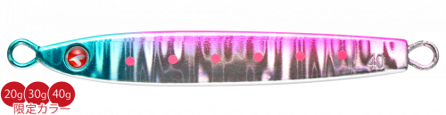
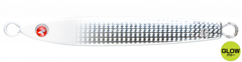
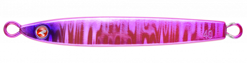
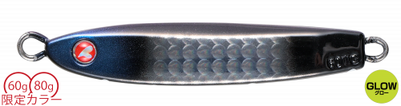

フォルテンTG
（FALLTEN TG）
フォルテンTGはBlueBlue（ブルーブルー）のタングステン製メタルジグです。
「フォルテンのタングステン化」という多くの要望に応えて完成したモデル。フォルテンのテールヘビー仕様を受け継ぎ、高比重タングステンでシルエットはさらに小さく、飛距離とフォールスピードはさらに上がっています。目玉が赤色で、g数が刻印されているのが目印です。

画像出典:BlueBlue公式HP
スペック
- メーカー
- BlueBlue（ブルーブルー）
- タイプ
- メタルジグ（タングステン・テールヘビー）
- ウェイト
- 20g／30g／40g／60g／80g
- 全長
- 55mm／62mm／67mm／65mm／75mm
- フック
- アシストフック標準装備（60g・80gを除く）
- ターゲット
- 青物・サワラ・ヒラメ・根魚ほか
- 価格
- 1,550円〜2,850円（税別）
▼今すぐチェック

フォルテンTGの特徴
タングステンのスモールシルエットで、ブッチギリに飛んで超速で落ちる
-
ブッチギリの飛距離
ノーマルのフォルテンより高比重で、シルエットは小さく、飛距離はさらに伸びています。今まで届かなかった沖の魚にもアプローチできます。
-
超速フォール
テールヘビーとタングステンで、素早くフォール。リアクションバイトを誘うだけでなく、ボトムタッチもはっきり分かります。
-
食い渋りに効くスモールシルエット
同じ重さでもシルエットが小さいので、小魚を食べている魚や食い渋りの状況にも効果的です。
フォルテンTGの使い方
基本はボトムまで沈めてからのジャーク＆フォール。速く沈むので、着底を確認しながらテンポよく誘えます。
フォーリングアクションで食わせる「スピニングスロー」もおすすめ。ベイトが小さいときは、ただ巻きで小さなシルエットを見せるのも効果的です。
フォルテンTGの得意な状況
ライトショアジギング〜ショアジギングでの青物狙い。遠くのナブラを狙いたいとき、ベイトが小さくて食い渋るとき、潮が速くて底が取りにくいときに向いています。
ワンポイント
コストを抑えて数を持ちたいときは、ノーマルのフォルテン（鉛）を。飛距離やシルエットで差をつけたいときにフォルテンTGを使い分けましょう。
フォルテンTGのウェイトの使い分け
| モデル | 全長／自重 | 得意な場面 |
|---|---|---|
| 20g | 55mm／20g | シーバスタックルでのライトショアジギングに |
| 30g | 62mm／30g | 堤防やサーフの基準ウェイト |
| 40g | 67mm／40g | 遠投が必要な場所や、少し深い場所に |
| 60g | 65mm／60g | ショアジギングでの青物狙いに（アシストフック別売） |
| 80g | 75mm／80g | 磯や潮の速い場所に（アシストフック別売） |
ノーマルのフォルテン（20〜40g）より、同じ重さで小さく、遠くまで飛ばせます。
人気カラー
公式ラインナップから4色を紹介します（カラー名は公式の表記のまま）。

#02 ピンクイワシピンクの背中のイワシカラー。朝マズメの青物狙いの基準に。

#09 グローヘッドシルバーグローヘッドとシルバーのボディ。マズメの暗い時間帯や濁りに。

#13 オールピンク全面ピンクのアピールカラー。濁りや朝夕に。

#15 トウキョウハダカイワシハダカイワシを意識したカラー。深場のベイトを意識したいときに。
画像出典:BlueBlue公式HP
フォルテンTGに似ているルアー
-
 フォルテン
ブルーブルー
詳細はこちら＞
フォルテン
ブルーブルー
詳細はこちら＞
20g〜40gの同シリーズ（鉛）。コストを抑えて使いたいときに。
-
 メタルマジックTG
アクアウェーブ
詳細はこちら＞
メタルマジックTG
アクアウェーブ
詳細はこちら＞
タングステン製のスピンテールジグ。ブレードのフラッシングで誘いたいときに。
-
 ジグパラショート
メジャークラフト
詳細はこちら＞
ジグパラショート
メジャークラフト
詳細はこちら＞
20g〜60gのセンターバランスのメタルジグ。フォールでゆっくり見せたいときに。